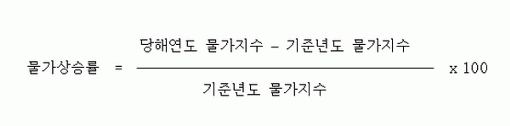
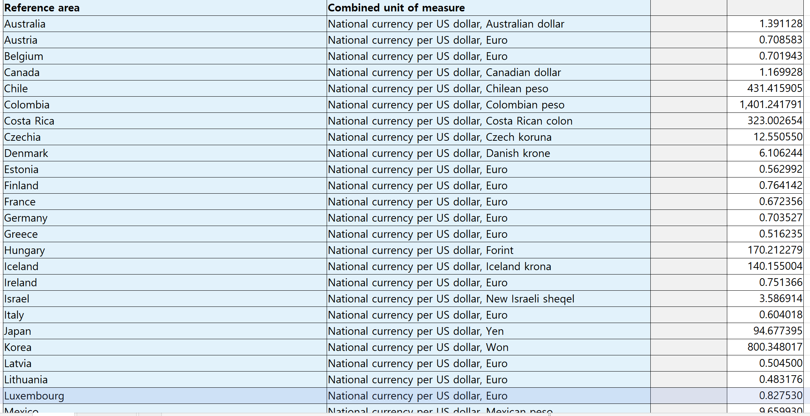
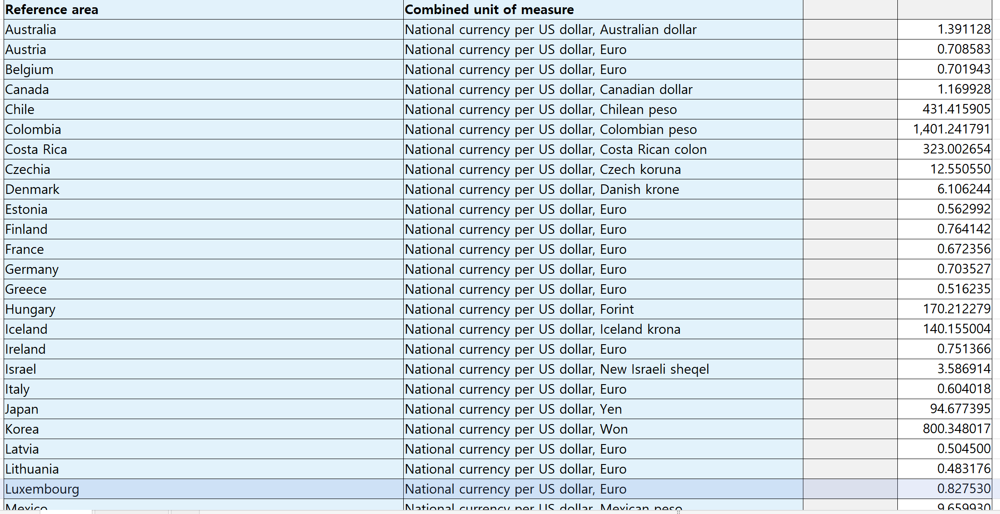

서론
import pandas as pdimport numpy as npimport matplotlib.pyplot as plt import seaborn as sns"figure.dpi" : 150 ,"figure.figsize" : [8 , 6 ],"font.size" : 11 ,"font.family" : "Malgun Gothic" })###서론 = pd.read_excel("file/소비자동향조사.xlsx" )= [5.5 ,4 ])"year" ]= intro, x= 'year' , y= '임금수준전망' , color= 'dodgerblue' , label= '임금수준전망' , marker= 'o' )= intro, x= 'year' , y= '향후경기전망' , color= 'salmon' , label= '향후경기전망' , marker= 'o' )= intro, x= 'year' , y= '현재경기판단' , color= 'red' , label= '현재경기판단' , marker= 'o' )'Year' ,fontsize= 14 )'Percentage(%)' ,fontsize= 14 )"소비자동향조사" )= "lower right" )
우리가 사용한 데이터와 수치들
CPI: 소비자물가지수란?
CPI(소비자 물가 지수) : 소비자들이 일상 생활에서 구매하는 상품과 서비스의 가격 변동을 측정하는 지표이다. 그 측정을 위해 다양한 소비자 Basket을 사용하며, 일반적인 CPI의 Basket엔 식품, 주택, 의류, 교통, 교육, 의료 등 모든 상품과 서비스가 포함된다. 예시로 식품 물가 지수의 Basket 안엔 음식만 들어가있다고 보면 된다.
Main
CPI(소비자 물가 지수)
= pd.read_excel("file/cpi_2011to2023.xlsx" )
0
시점
총지수
생활물가지수
식품
쌀
국수
라면
두부
빵
떡
...
미용료
치약
샴푸
화장지
기초화장품
보험서비스료
자동차보험료
전월세
생활물가 이외
전·월세포함 생활물가지수
1
2011
89.85
91.997
83.653
76.467
-
88.315
89.406
69.442
81.75
...
78.205
86.66
129.914
102.494
90.913
-
92.538
85.412
87.841
90.988
2
2012
91.815
93.562
85.614
83.846
-
94.881
90.768
72.246
83.81
...
81.967
85.68
132.54
105.674
93.035
-
90.755
89.014
89.972
92.886
3
2013
93.01
94.238
86.326
88.444
-
95.367
96.588
77.474
85.572
...
85.2
81.732
124.058
105.83
94.115
-
90.137
91.383
91.64
93.815
4
2014
94.196
95.031
86.776
86.885
-
95.444
97.112
82.16
86.886
...
89.075
91.295
124.032
103.967
97.776
-
90.137
93.527
93.167
94.807
5 rows × 152 columns
= {'시점' :"year" ,"전국" : "cpi" ,"전국.2" :"food_cpi" },inplace= True )0 ,inplace= True ) = df[['year' ,'cpi' ,'food_cpi' ]]= True ,inplace= True )
inplace = True
reset_index(drop=True)
최저시급 열 추가
list = ["4,320" ,"4,580" ,"4,860" ,"5,210" ,"5,580" ,"6,030" ,"6,470" ,\ "7,530" ,"8,350" ,"8,590" ,"8,720" ,"9,160" ,"9,620" ]'min_wage' ] = np.array(list )= df[['year' ,"min_wage" , 'cpi' , 'food_cpi' ]]
0
2011
4,320
89.85
83.653
1
2012
4,580
91.815
85.614
2
2013
4,860
93.01
86.326
3
2014
5,210
94.196
86.776
4
2015
5,580
94.861
88.82
type (df["min_wage" ][0 ])type (df["year" ][0 ])"min_wage" ] = df["min_wage" ].str .replace(',' ,"" ).astype(int ) "year" ] = df["year" ].astype(int ) type (df["min_wage" ][0 ])type (df["year" ][0 ])
0
2011
4320
89.85
83.653
1
2012
4580
91.815
85.614
2
2013
4860
93.01
86.326
3
2014
5210
94.196
86.776
4
2015
5580
94.861
88.82
5
2016
6030
95.783
91.158
6
2017
6470
97.645
94.199
7
2018
7530
99.086
96.373
8
2019
8350
99.466
97.161
9
2020
8590
100
100
10
2021
8720
102.5
104.69
11
2022
9160
107.72
111.88
12
2023
9620
111.59
118.16
= df['cpi' ][0 ]/ df['cpi' ][9 ]= df['food_cpi' ][0 ]/ df['food_cpi' ][9 ]"cpi" ] = df["cpi" ]/ cpi_coefficent"food_cpi" ] = df["food_cpi" ]/ food_coefficent
0
2011
4320
100.0
100.0
1
2012
4580
102.186978
102.344208
2
2013
4860
103.516973
103.195343
3
2014
5210
104.83695
103.733279
4
2015
5580
105.577073
106.176706
인플레이션
우리가 흔히 알고 있는 인플레이션율이란 물가 상승률로, CPI의 변화율로 측정할 수 있다. 일반적인 국가에선 물가는 지속적으로 상승하기 때문에 인플레이션은 대부분 양수로 나타난다.

"inflation" ] = 0.0 for i in range (1 , len (df)):"inflation" ] = ((df.loc[i, "cpi" ] - df.loc[i- 1 , "cpi" ])\ / df.loc[i- 1 , "cpi" ]) * 100
0
2011
4320
100.0
100.0
0.000000
1
2012
4580
102.186978
102.344208
2.186978
2
2013
4860
103.516973
103.195343
1.301530
3
2014
5210
104.83695
103.733279
1.275132
4
2015
5580
105.577073
106.176706
0.705975
'food_inflation' ] = 0 for i in range (1 , len (df)):\ "food_inflation" ] = ((df.loc[i, "food_cpi" ] - df.loc[i- 1 , "food_cpi" ])\ / df.loc[i- 1 , "food_cpi" ]) * 100 'food_inflation' ] = df['food_inflation' ].fillna(0 )
0
2011
4320
100.0
100.0
0.000000
0.000000
1
2012
4580
102.186978
102.344208
2.186978
2.344208
2
2013
4860
103.516973
103.195343
1.301530
0.831640
3
2014
5210
104.83695
103.733279
1.275132
0.521280
4
2015
5580
105.577073
106.176706
0.705975
2.355490
인플레이션, 식품 인플레이션 비교 그래프
= (5.5 ,4 ))= df, x= 'year' , y= 'food_inflation' ,color= 'red' ,label= '식품 인플레이션' , marker= 'o' )= df, x= 'year' , y= 'inflation' ,color= 'dodgerblue' ,label= '인플레이션' , marker= 'o' )# 레이블과 제목 설정 'Year' ,fontsize= 16 )'Percentage(%)' ,fontsize= 16 )'소비자 물가지수와 식품 물가지수의 상승률 비교' )# 그래프 표시
<Figure size 1200x900 with 0 Axes>
실제 소비자가 체감하는 물가상승률이 더 크다.
실질적인 최저 시급을 구하기 위해서 인플레이션 조정계수를 구한후 최저 시급에 곱했다. 인플레이션 조정 계수를 곱함으로써 물가의 영향을 제거할 수 있다.
= np.array(100 / df['cpi' ])'real_wage' ] = df['min_wage' ] * infla_coefficient'real_wage' ] = df['real_wage' ].astype(int )"real_wage_roc" ] = 0 for i in range (1 , len (df)):"real_wage_roc" ] = ((df.loc[i, "real_wage" ] - df.loc[i- 1 , "real_wage" ])\ / df.loc[i- 1 , "real_wage" ]) * 100 "min_wage_roc" ] = 0 for i in range (1 , len (df)):"min_wage_roc" ] = ((df.loc[i, "min_wage" ] - df.loc[i- 1 , "min_wage" ])\ / df.loc[i- 1 , "min_wage" ]) * 100 = df[['year' , 'min_wage' ,'real_wage' ,"min_wage_roc" ,"real_wage_roc" ,\ 'cpi' , 'food_cpi' , 'inflation' , 'food_inflation' ]]
0
2011
4320
4320
0.000000
0.000000
100.0
100.0
0.000000
0.000000
1
2012
4580
4481
6.018519
3.726852
102.186978
102.344208
2.186978
2.344208
2
2013
4860
4694
6.113537
4.753403
103.516973
103.195343
1.301530
0.831640
3
2014
5210
4969
7.201646
5.858543
104.83695
103.733279
1.275132
0.521280
4
2015
5580
5285
7.101727
6.359428
105.577073
106.176706
0.705975
2.355490
최저시급/ 실질 최저시급 상승률 비교
= (5.5 ,4 ))= df,x= 'year' ,y= 'min_wage_roc' ,color= 'red' ,label= ' 최저시급 변화율' ,marker= 'o' )= df,x= 'year' ,y= 'real_wage_roc' ,color= 'dodgerblue' ,label= '실질 최저시급 변화율' ,marker= 'o' )# 레이블과 제목 설정 'Year' ,fontsize= 16 )'Percentage(%)' ,fontsize= 16 )- 2 , 17 )'최저시급과 실질 최저시급의 변화율 비교' )
“실질 최저시급”의 상승률이 모든 연도에서 최저시급의 상승률보다 낮다. 또한 2021 ~ 2022년도 같은 경우 최저 시급이 상승했음에도 실질 최저 시급이 하락했다.
한국의 최저임금이 OECD의 다른 나라와 비교하면 어떨까?
OECD별 최저 시급 데이터가 있지만, 각 나라의 물가가 반영이 안 된 지표이기에 환율과 PPP 데이터를 사용하였다.
PPP란?
PPP는 구매력 평가라는 뜻으로, 실질 구매력을 나타내는 지표이다. 예를 들어 한국의 dollar PPP는 미국에서 1달러를 가지고 살 수 있는 상품을 한국에서 살 때 드는 금액으로 정의할 수 있다.
OECD 국가 별 최저시급
= pd.read_excel("file/2/최저임금데이터_df.xlsx" )= ["file/2/PPP원데이터_df.xlsx" ,"file/2/환율원데이터_df.xlsx" ]= pd.read_excel(path1)
Index(['Reference area', 'Combined unit of measure', 'Unnamed: 2',
'Unnamed: 3'],
dtype='object')
= {"Reference area" :"country" ,"Unnamed: 3" :"dollar_ppp" },inplace= True )"dollar_ppp" ] = df2["dollar_ppp" ].astype(float )= {"United Kingdom" : 'UnitedKingdom' , 'Türkiye' : 'Turkiye' , "New Zealand" : 'NewZealand' 'country' ] = df2['country' ].replace(names)= df2[["country" ,"dollar_ppp" ]] = pd.merge(before_frame,temp_frame2,how= "left" ,on= "country" )
0
Mexico
1.1
28
9.659930
1
Chile
2.1
27
431.415905
2
Turkiye
2.6
26
6.974967
3
Latvia
3.0
25
0.504500
4
Hungary
3.1
24
170.212279
= pd.read_excel(path2) = {"Reference area" :"country" ,"Unnamed: 4" :"exchange_rate" },inplace= True )= df3[df3['Transaction' ]== "Exchange rates, average" ].reset_index(drop= True )"exchange_rate" ] = df3["exchange_rate" ].astype(float )'country' ] = df3['country' ].replace(names)= df3[["country" ,"exchange_rate" ]]= pd.merge(before_frame,temp_frame3,how= "left" ,on= "country" )'country' ] == 'Turkiye' , 'exchange_rate' ] = 33.1
0
Mexico
1.1
28
9.659930
17.758717
1
Chile
2.1
27
431.415905
840.066527
2
Turkiye
2.6
26
6.974967
33.100000
3
Latvia
3.0
25
0.504500
0.924840
4
Hungary
3.1
24
170.212279
353.088333
"coefficient" ] = oecd["exchange_rate" ]/ oecd["dollar_ppp" ]"real_wage" ] = oecd["min_wage" ]* oecd["coefficient" ]
0
Mexico
1.1
28
9.659930
17.758717
1.838390
2.022229
1
Chile
2.1
27
431.415905
840.066527
1.947231
4.089186
2
Turkiye
2.6
26
6.974967
33.100000
4.745542
12.338410
3
Latvia
3.0
25
0.504500
0.924840
1.833181
5.499544
4
Hungary
3.1
24
170.212279
353.088333
2.074400
6.430640
= oecd.sort_values("real_wage" ,ascending= True ).reset_index(drop= True )= (8 ,4 ))= np.where(oecd["country" ]== "Korea" ,"red" ,"dodgerblue" )= oecd.sort_values("real_wage" ,ascending= True ), \ = 'country' , y= 'real_wage' , palette= bar_colors)= 45 , fontsize= 6 ) # 글씨 크기와 회전 각도 조정 = 12 )'Country' ,fontsize= 14 ) # 축 제목 글씨 크기 조정 'Real Wage' ,fontsize= 14 ) # 축 제목 글씨 크기 조정 'OECD 국가별 실질 최저임금' , fontsize= 20 ) # 제목 글씨 크기 조정
<Figure size 1200x900 with 0 Axes>
상대적인 비교를 위해 OECD 실질 임금의 평균을 구하여 그래프에 추가하는 작업을 진행하였다.
OECD 평균 임금 추가한 그래프
= oecd["real_wage" ].mean()#country 에 평균 임금을 추가. = pd.DataFrame({"country" :'Mean' ,"real_wage" :mean1},index= [0 ])= pd.concat([oecd,frame])= oecd1.sort_values("real_wage" ,ascending= True ).reset_index(drop= True )
#Mean,Korea 색 다르게 하기 = np.where(oecd1["country" ]== "Korea" ,"red" ,np.where(oecd1["country" ]== "Mean" ,"seagreen" ,"dodgerblue" ))= oecd1.sort_values("real_wage" ,ascending= True ),\ = 'country' , y= 'real_wage' , palette= bar_colors)'Country' ,fontsize= 14 ) # 축 제목 글씨 크기 조정 'Real Wage' ,fontsize= 14 ) # 축 제목 글씨 크기 조정 'OECD 주요국가별 실질 최저임금' , fontsize= 20 ) # 제목 글씨 크기 조정
0 Mexico
1 Chile
2 Latvia
3 Hungary
4 Estonia
5 Slovak Republic
6 Czechia
7 United States
8 Greece
9 Poland
10 Israel
11 Portugal
12 Lithuania
13 Mean
14 Japan
15 Slovenia
16 Korea
17 Turkiye
18 Canada
19 Netherlands
20 Spain
21 Ireland
22 UnitedKingdom
23 Belgium
24 Germany
25 NewZealand
26 Luxembourg
27 France
28 Australia
Name: country, dtype: object
= [0 ,3 ,7 ,9 ,11 ,13 ,14 ,16 ,18 ,20 ,22 ,24 ,27 ]= ['Mexico' , 'Hungary' , 'United States' , 'Poland' , 'Portugal' , 'Mean' ,'Japan' , 'Korea' , 'Canada' , 'Spain' ,\ 'United Kingdom' , 'Germany' , 'France' ]= 45 , fontsize= 10 , ticks = show_country_label,labels = show_country ) # 글씨 크기와 회전 각도 조정 = 12 )
OECD 주요 국가의 평균 실질 임금 그래프
= oecd["real_wage" ].mean()= pd.DataFrame({"country" :'Mean' ,"real_wage" :mean1},index= [0 ])= pd.concat([oecd,frame])= oecd1.sort_values("real_wage" ,ascending= True ).reset_index(drop= True )= (5.5 ,4 ))= np.where(oecd1["country" ]== "Korea" ,"red" ,np.where(oecd1["country" ]== "Mean" ,"seagreen" ,"dodgerblue" ))= oecd1.sort_values("real_wage" ,ascending= True ),\ = 'country' , y= 'real_wage' , palette= bar_colors)'Country' ,fontsize= 14 ) # 축 제목 글씨 크기 조정 'Real Wage' ,fontsize= 14 ) # 축 제목 글씨 크기 조정 'OECD 주요국가별 실질 최저임금' , fontsize= 20 ) # 제목 글씨 크기 조정 = [0 ,3 ,7 ,9 ,11 ,13 ,14 ,16 ,18 ,20 ,22 ,24 ,27 ]= ['Mexico' , 'Hungary' , 'United States' , 'Poland' , 'Portugal' , 'Mean' ,'Japan' , 'Korea' , 'Canada' , 'Spain' ,\ 'United Kingdom' , 'Germany' , 'France' ]= 45 , fontsize= 10 , ticks = show_country_label,labels = show_country ) # 글씨 크기와 회전 각도 조정 = 12 )
우리나라의 실질 최저 임금이 OECD 평균보다 높다는 것으로, 한국의 최저 임금이 타 국가들과 비교해서 높은 편인 것을 알 수 있다.
결론
인플레이션의 영향으로 최저시급 상승률에 비해 실질 최저시급 상승률이 낮다.
실질 물가 상승은 일반 소비자에게 더 크게 다가온다.
(Food CPI 예를 들면서 물가 상승시, 음식과 같은 필수재들의 물가는 소비자들에게 더 크게 다가올 수 있다.)
우리나라의 최저 임금은 OECD 내에서도 평균 이상이기 때문에, 최저임금의 대폭 인상은 바람직하지 않다.
최저 시급의 대폭 인상은 인플레이션과 고용시장에의 부정적 영향 등의 부작용을 동반한다.
최저임금 상승의 목적인 근로자의 소득 수준 상승과 그에 따른 소비 여력의 증가로 인한 경제 활성화는 노동, 복지 등의 다른 관점에서 접근하는 것이 유리할 수 있다.
 
